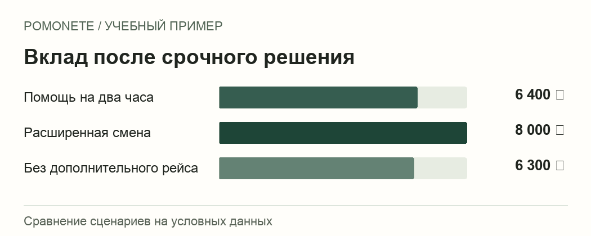

Сверхурочные для отгрузки заказов Яндекс Маркета. Как посчитать смысл
Как аналитика селлера связывает сохранённый вклад, оплату ожидания и стоимость срочного решения.
Селлер Яндекс Маркета видит крупную очередь по штативам. Можно оплатить дополнительные часы и уменьшить риск отмены. Перед решением важно выяснить, какие заказы действительно успеют, и какую часть их вклада сохраняет срочный режим после затрат.
Как оценить сохранённый объём
В расчёт добавьте только операции, которые успеют пройти подготовку и передачу вследствие дополнительного ресурса. Если заказ можно выполнить на обычном режиме без риска по сроку, его вклад остаётся в базе. Для каждого варианта уточните, доступен ли приём в выбранные часы.
Чтобы пересобрать расчёт «Вклад после срочного решения» для своего магазина, перенесите в него исходные числа. В формуле A обозначает «сохранённый вклад заказов, ₽», B обозначает «доплата команде, ₽», C обозначает «дополнительная передача, ₽». Две вычитаемые суммы хранят отдельно, чтобы можно было проследить происхождение изменения и избежать двойного вычета. Запишите рядом период и охват каждого среза. Для оценочных строк оставьте пояснения рядом с исходными значениями. При чтении сводки будет видно, какие из них пока подтверждены.
Вклад после срочного решения = A − B − C
| Условие | Сохранённый вклад заказов, ₽ | Доплата команде, ₽ | Дополнительная передача, ₽ | Вклад после срочного решения |
|---|---|---|---|---|
| Помощь на два часа | 15 600 | 6 800 | 2 400 | 6 400 ₽ |
| Расширенная смена | 21 900 | 10 700 | 3 200 | 8 000 ₽ |
| Без дополнительного рейса | 13 100 | 6 800 | 0 | 6 300 ₽ |

В сценарии «Помощь на два часа» в формулу подставляем сохранённый вклад заказов, ₽ = 15 600, доплата команде, ₽ = 6 800, дополнительная передача, ₽ = 2 400. Получается 6 400 ₽. Будут обработаны готовые заказы, для которых срок можно выполнить.
В сценарии «Расширенная смена» в формулу подставляем сохранённый вклад заказов, ₽ = 21 900, доплата команде, ₽ = 10 700, дополнительная передача, ₽ = 3 200. Получается 8 000 ₽. Работы больше, но часть времени уходит на задачи, которые можно перенести.
В сценарии «Без дополнительного рейса» в формулу подставляем сохранённый вклад заказов, ₽ = 13 100, доплата команде, ₽ = 6 800, дополнительная передача, ₽ = 0. Получается 6 300 ₽. Передаются заказы в существующее окно, объём меньше.
Если «Помощь на два часа» взять за исходную точку, «Расширенная смена» меняет показатель «вклад после срочного решения» на 1 600 ₽, а «Без дополнительного рейса» на -100 ₽. Между двумя последними строками разница составляет -1 700 ₽ при вычитании второй из третьей. Смотрите, какой именно вход изменился между строками. Если менялись объём и условия одновременно, итог сравнения относится ко всему сочетанию.
В пересчёте на исходное значение разница второй строки составляет 25%. Здесь в знаменателе модуль первого результата, 6 400 ₽. Для показателя в процентах рядом сохраните и абсолютную разницу в процентных пунктах. Для малого исходного значения процентный скачок может оказаться крупным даже при скромном практическом эффекте. В рабочем отчёте оставьте оба исходных значения, чтобы при расширении выборки можно было пересчитать изменение.
Почему расходы надо разделять
Доплата за человека и изменение перевозки могут возникать в разной связке. Сначала посчитайте первый вариант на имеющихся окнах. Для второго попробуйте оценить стоимость дополнительной передачи с учётом числа реально спасаемых заказов.
Соберите небольшую исходную выборку для «Расширенная смена», прежде чем переносить правило на весь магазин. Нужны журнал склада и временные отметки заказов. Среди записей найдите одну обычную и одну с изменённым значением «сохранённый вклад заказов, ₽». Убедитесь, что после пересчёта на сопоставимое окно обе строки дают те же результаты, которые видит исполнитель. Для ручных поправок оставьте короткое основание.
Для сравнения выведите короткий журнал с временем поступления работы, началом обработки и моментом передачи. Длительность операции измеряют на нескольких сменах, чтобы короткая спокойная неделя не стала единственной нормой. Товары разных размеров и сложность сборки записывают отдельными группами. На узком участке проверьте распределение работы по часам и общую загрузку за день. Даже при одинаковом дневном итоге в очереди может остаться разное количество заказов.
Что сильнее всего меняет результат
Для «вклад после срочного решения» начнём с результата 8 000 ₽. В «Расширенная смена» условно меняем «сохранённый вклад заказов, ₽», «доплата команде, ₽», «дополнительная передача, ₽» по очереди. Шаг округляем до целой исходной единицы около 10%. Сравнение относится к одной строке расчёта. При сильной сезонной смене его полезно повторить и на второй базе с другим доступным объёмом.
- «Сохранённый вклад заказов, ₽» меняется с 21 900 на 24 090. При прежних остальных входах получается 10 190 ₽, сдвиг составляет 2 190 ₽.
- «Доплата команде, ₽» меняется с 10 700 на 11 770. При прежних остальных входах получается 6 930 ₽, сдвиг составляет -1 070 ₽.
- «Дополнительная передача, ₽» меняется с 3 200 на 3 520. При прежних остальных входах получается 7 680 ₽, сдвиг составляет -320 ₽.
Данные по «сохранённый вклад заказов, ₽» дали самый заметный эффект величиной 2 190 ₽. Подготовьте второй тест с двумя входами, которые обычно меняются вместе. Сравните его с одиночной подстановкой. Различие покажет, хватит ли следить за одной строкой при выбранном действии или в отчёте понадобится связанная пара наблюдений.
Проверьте, была ли в тот день необычная сложность комплектации. Сверхурочные могут казаться выгодными при высоком среднем вкладе, пока одна нестандартная единица занимает треть времени. Для повторных решений полезно считать вклад на минуту узкого участка.
Что записать после смены
Зафиксируйте, какие заказы успели и сколько осталось на следующий интервал. Сравните реальный объём доплаты с оценкой. Если срочная мера требуется постоянно, ищите причины в графике работы, запасе готовых товаров и частоте пиков.
Полезно раз в несколько смен собрать пакет отклонений и приложить отметки о причинах. У одного опоздания бывает несколько объяснений, и назначать его первому видимому участку рискованно. Если временный ресурс перемещали между зонами, включите в расчёт, где исчезли эти часы. После пилота проверьте верхний хвост длительности и число заказов, которые перешли за срок.
В карточку наблюдения внесите исходный ориентир, факт после вмешательства и размер выборки. Для «вклад после срочного решения» оставьте единицу из таблицы и дату подстановки. В аналитике продавца Яндекс Маркета показатель должен отвечать на тот же вопрос при повторном сборе. Если на следующем цикле изменятся исходники, сохраняйте расхождение вплоть до строки, которую сможет пересчитать коллега.